Chủ đề 5: Tối ưu năng suất cá nhân
Topic 5: Optimise Personal Productivity — bản đối chiếu Anh – Việt
PGS. Agnis Stibe · 78 slide
Quy ước của bản dịch. Mỗi slide là một khối: cột bên trái là nguyên văn tiếng Anh (màu xám), cột bên phải là bản tiếng Việt (màu đen). Nội dung được dịch sát theo từng slide, không lược bỏ.
Đây là bài giảng dùng rất nhiều hình ảnh và video. Nhiều slide chỉ có một vài chữ lớn hoặc hoàn toàn không có chữ. Với những slide đó, phần mô tả hình ảnh được ghi bằng chữ nghiêng màu xám để người đọc hình dung được mạch trình bày; phần mô tả này là ghi chú của bản dịch, không phải nội dung gốc trên slide.
Thuật ngữ chuyên môn được dịch sang tiếng Việt kèm nguyên bản tiếng Anh trong ngoặc ở lần xuất hiện đầu tiên. Tên riêng, tên tổ chức, tên sách và địa chỉ liên hệ giữ nguyên. Khái niệm trung tâm của diễn giả — hyper-performance — được dịch là “hiệu suất vượt trội”.
Topic 5: Optimise Personal Productivity
Chủ đề 5: Tối ưu năng suất cá nhân
RMIT University Vietnam, Saigon South Campus
me.grow — RMIT & Zalo
Đại học RMIT Việt Nam, cơ sở Nam Sài Gòn
me.grow — RMIT & Zalo
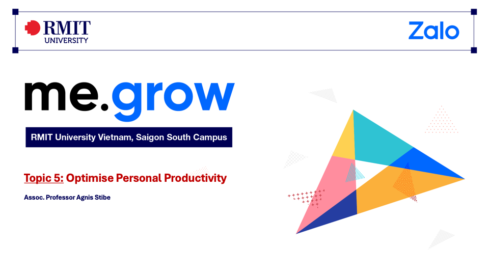
| Challenge Thách thức |
Typical manager situation Tình huống thường gặp của quản lý |
Productivity problem Vấn đề về năng suất |
| 1. Everything feels urgent 1. Mọi việc đều có vẻ khẩn cấp | Product issue, senior-management request, partner escalation, and team problem arrive simultaneously. Sự cố sản phẩm, yêu cầu từ ban lãnh đạo, khiếu nại leo thang từ đối tác và vấn đề của đội ngũ ập đến cùng lúc. | Difficulty distinguishing urgent work from high-impact work. Khó phân biệt việc khẩn cấp với việc có tác động lớn. |
| 2. Meeting overload 2. Quá tải họp hành | Calendar is filled with stand-ups, cross-functional meetings, reviews, and ad-hoc discussions. Lịch làm việc kín đặc các buổi stand-up, họp liên bộ phận, họp rà soát và trao đổi phát sinh. | Little uninterrupted time for thinking and important decisions. Rất ít khoảng thời gian liền mạch để suy nghĩ và ra các quyết định quan trọng. |
| 3. Constant Zalo messages 3. Tin nhắn Zalo liên tục | Team members and stakeholders expect rapid responses throughout the day. Thành viên đội ngũ và các bên liên quan mong được phản hồi nhanh suốt cả ngày. | Attention fragmentation and continuous context switching. Sự chú ý bị phân mảnh và liên tục phải chuyển đổi bối cảnh công việc. |
| 4. Managing upward and downward 4. Quản lý cả cấp trên lẫn cấp dưới | Senior leaders want fast results while team members need guidance and decisions. Lãnh đạo cấp cao muốn có kết quả nhanh, trong khi nhân viên cần được hướng dẫn và cần quyết định. | Manager becomes the execution bottleneck. Người quản lý trở thành nút thắt cổ chai trong triển khai. |
| 5. Too many decisions 5. Quá nhiều quyết định | Dozens of small approvals, prioritisation choices, and exceptions reach the manager every day. Mỗi ngày có hàng chục phê duyệt nhỏ, lựa chọn ưu tiên và trường hợp ngoại lệ dồn về người quản lý. | Decision fatigue and cognitive overload. Mệt mỏi vì ra quyết định và quá tải nhận thức. |
| Challenge Thách thức |
Typical manager situation Tình huống thường gặp của quản lý |
Productivity problem Vấn đề về năng suất |
| 6. AI creates more work, not less 6. AI tạo thêm việc chứ không bớt việc | Manager uses AI for reports, summaries, analysis, content, and ideation but constantly checks and revises outputs. Người quản lý dùng AI để làm báo cáo, tóm tắt, phân tích, nội dung và ý tưởng, nhưng phải liên tục kiểm tra và chỉnh sửa kết quả. | AI increases information volume without necessarily increasing value. AI làm tăng khối lượng thông tin nhưng không hẳn làm tăng giá trị. |
| 7. Knowing what to do but not doing it 7. Biết phải làm gì nhưng không làm | Manager knows the strategic priorities but spends most of the day responding to immediate demands. Người quản lý biết rõ các ưu tiên chiến lược nhưng dành phần lớn thời gian trong ngày để phản ứng với những yêu cầu trước mắt. | Classic Knowledge–Behaviour Gap. Đây chính là Khoảng cách Tri thức – Hành vi (Knowledge–Behaviour Gap) kinh điển. |
| 8. Delegation vs. “I can do it faster myself” 8. Giao việc và suy nghĩ “tự làm cho nhanh” | Under deadline pressure, the manager takes work back from employees. Dưới áp lực thời hạn, người quản lý lấy lại phần việc đã giao cho nhân viên. | Short-term efficiency creates long-term dependency and overload. Hiệu quả ngắn hạn tạo ra sự phụ thuộc và tình trạng quá tải trong dài hạn. |
| 9. Cross-functional dependencies 9. Phụ thuộc liên bộ phận | A launch requires product, engineering, marketing, data, legal, and commercial teams. Một lần ra mắt sản phẩm cần đến các bộ phận sản phẩm, kỹ thuật, marketing, dữ liệu, pháp lý và kinh doanh. | Manager spends excessive cognitive energy coordinating dependencies. Người quản lý tiêu tốn quá nhiều năng lượng trí óc cho việc điều phối các mối phụ thuộc. |
| 10. Performance vs. wellbeing 10. Hiệu suất và sức khoẻ tinh thần | High-growth expectations encourage long hours and permanent availability. Kỳ vọng tăng trưởng cao khuyến khích làm việc nhiều giờ và luôn phải sẵn sàng. | Short-term output may undermine sustained hyper-performance. Kết quả ngắn hạn có thể làm suy giảm hiệu suất vượt trội bền vững. |
EXAMPLE
VÍ DỤ
By 9:20, you have 34 unread Zalo messages, your director asks for numbers by noon, a key employee needs an urgent decision, another team requests approval, and AI has generated a 15-page analysis you need to review.
What do you do next?
Đến 9:20, bạn có 34 tin nhắn Zalo chưa đọc, giám đốc yêu cầu số liệu trước buổi trưa, một nhân sự chủ chốt cần một quyết định gấp, một bộ phận khác xin phê duyệt, và AI vừa tạo ra bản phân tích 15 trang mà bạn phải rà soát.
Bạn sẽ làm gì tiếp theo?
EXAMPLE
VÍ DỤ
- Do now / Schedule / Delegate or AI-augment / Eliminate or decline.
Then ask:
- Which of these tasks requires me?
- Which requires another human?
- Which can be handled by AI?
- Which should not be done at all?
- Làm ngay / Xếp lịch / Giao việc hoặc để AI hỗ trợ / Loại bỏ hoặc từ chối.
Sau đó tự hỏi:
- Việc nào nhất thiết cần đến tôi?
- Việc nào cần một người khác làm?
- Việc nào AI có thể đảm nhận?
- Việc nào lẽ ra không nên làm?
Slide chiếu một đoạn video phỏng vấn Steve Jobs.
WRONG SHORTCUTS
NHỮNG LỐI TẮT SAI LẦM
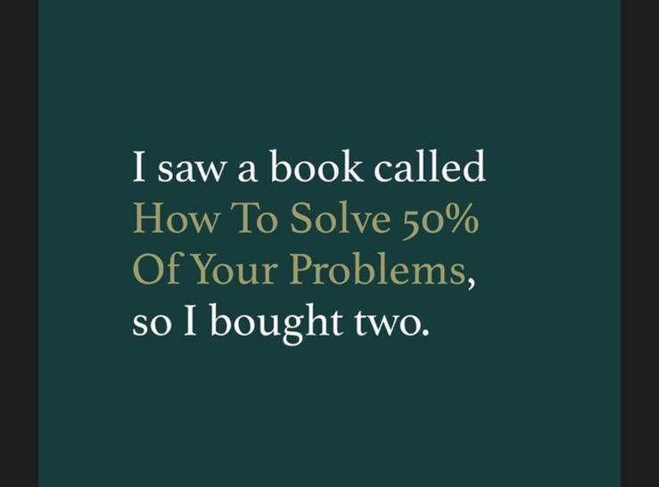
Slide không có chữ. Bốn hình chụp những vật dụng “giải pháp” được thiết kế cầu kỳ nhưng vô dụng — minh hoạ cho các lối tắt sai lầm ở slide trước.
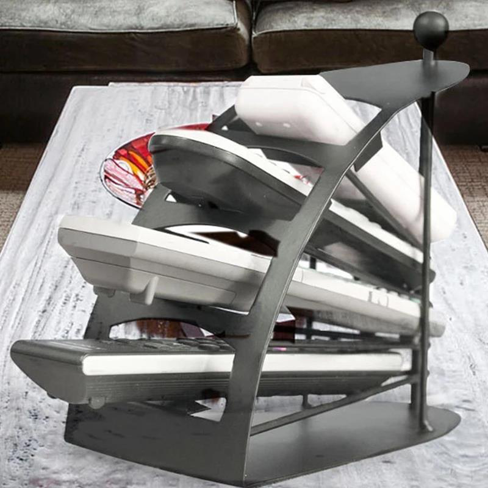
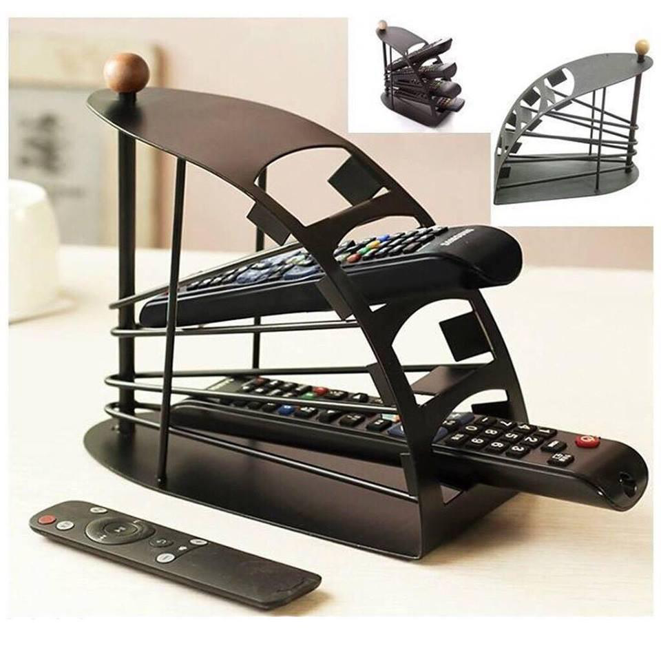
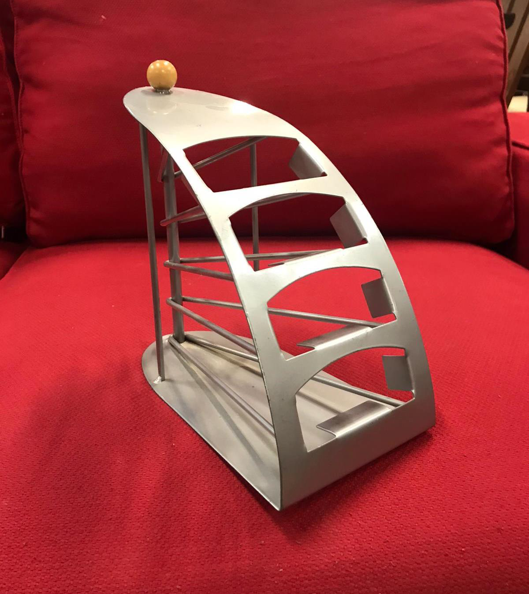
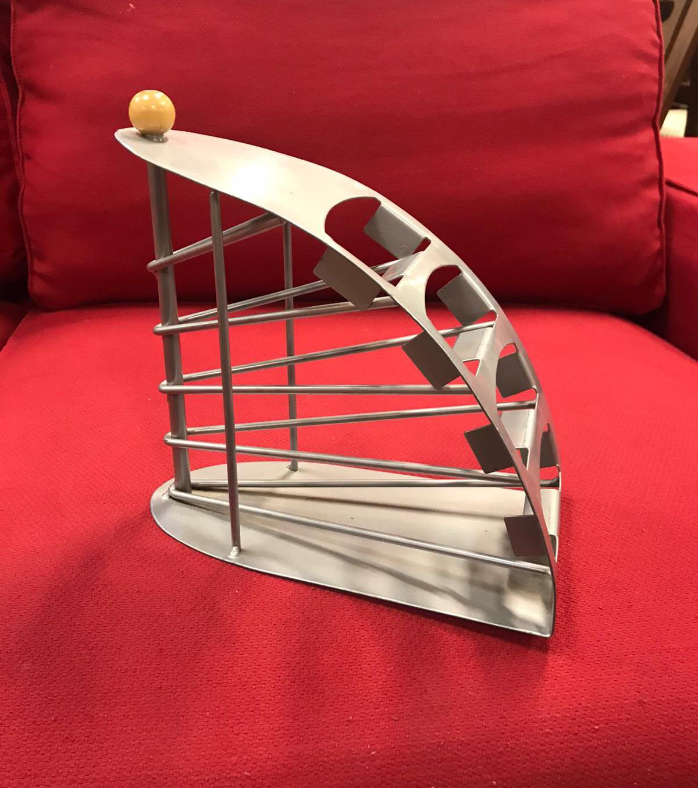
Video một người biểu diễn cầm hai chiếc búa gỗ trên sân khấu tối.
WHAT IS BURNOUT
KIỆT SỨC LÀ GÌ
Trong hình: “FEELING THE ‘BURN’ — World Health Organization recognizes ‘burnout’ as medical condition”.
Trong hình: “CẢM GIÁC ‘CHÁY’ — Tổ chức Y tế Thế giới công nhận ‘kiệt sức’ là một tình trạng y tế”.
Chú thích trong hình: cortisol; blood sugar. “…providing the body with a lot of readily available energy.”
Chú thích trong hình: cortisol; đường huyết. “…cung cấp cho cơ thể một lượng lớn năng lượng sẵn sàng sử dụng.”
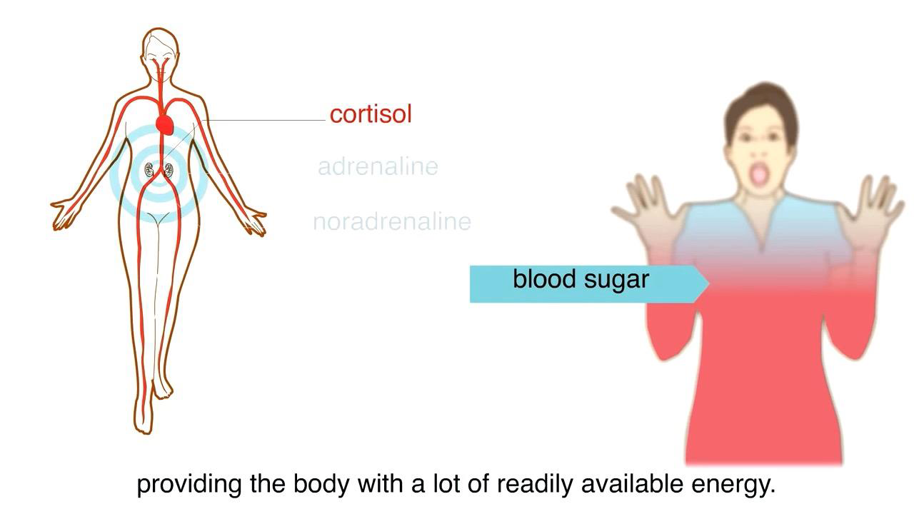
Chú thích trong hình: adrenaline; noradrenaline. “Adrenaline and noradrenaline enable the body to perform quickly.”
Chú thích trong hình: adrenaline; noradrenaline. “Adrenaline và noradrenaline giúp cơ thể phản ứng nhanh.”
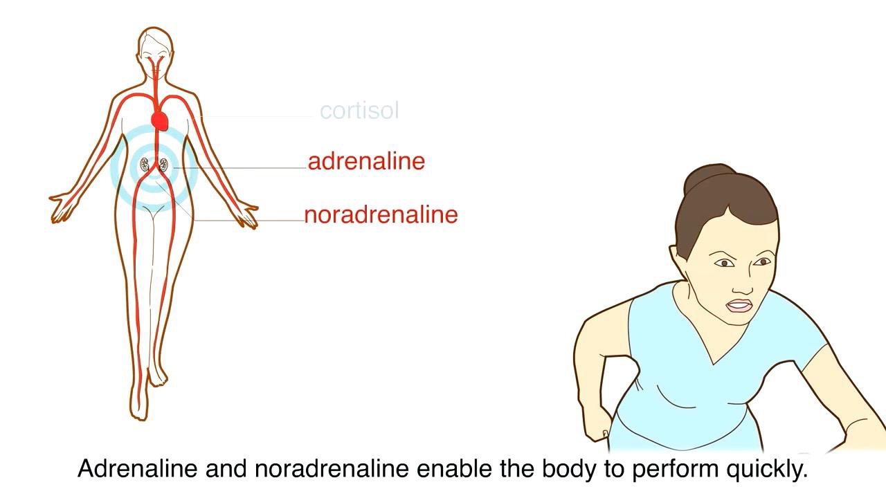
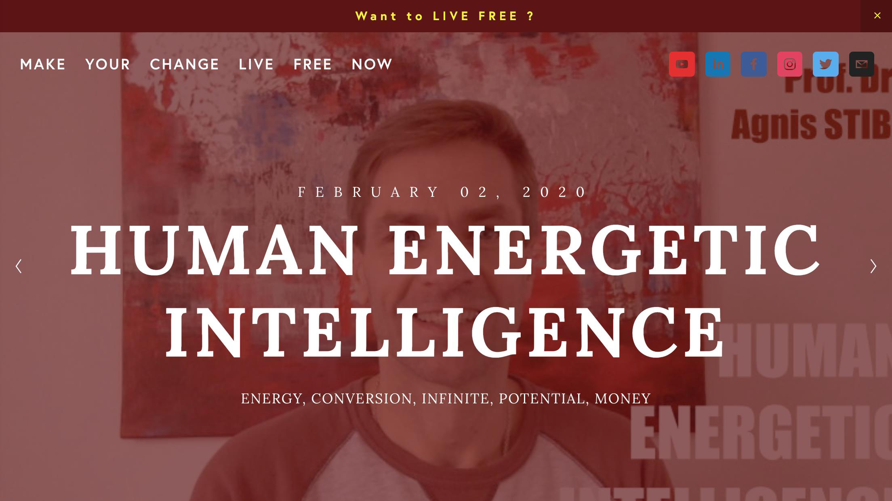
Conservation of energy. “The law of conservation of energy states that energy can neither be created nor destroyed — only converted from one form of energy to another. This means that a system always has the same amount of energy, unless it’s added from the outside.”
Bảo toàn năng lượng. “Định luật bảo toàn năng lượng phát biểu rằng năng lượng không tự sinh ra cũng không tự mất đi — nó chỉ chuyển từ dạng này sang dạng khác. Điều đó có nghĩa là một hệ luôn có cùng một lượng năng lượng, trừ khi được bổ sung từ bên ngoài.”
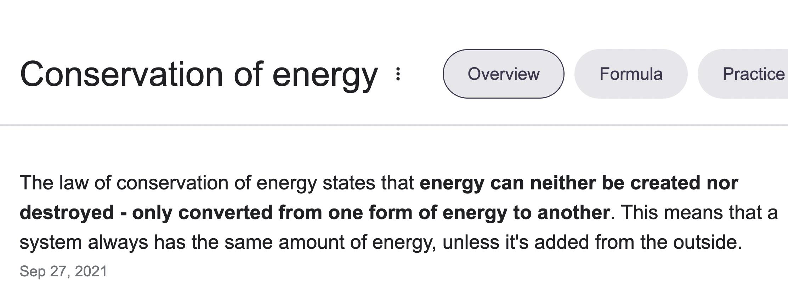
LOST BALANCE
MẤT CÂN BẰNG
BURNOUT MASK
CHIẾC MẶT NẠ KIỆT SỨC
Video diễn giả đưa bàn tay che trước mặt như một chiếc mặt nạ.
HYPER PERFORMANCE
BURNOUT
HIỆU SUẤT VƯỢT TRỘI
KIỆT SỨC
Hình âm dương: hiệu suất vượt trội và kiệt sức là hai mặt của cùng một thể, do suy nghĩ quyết định.
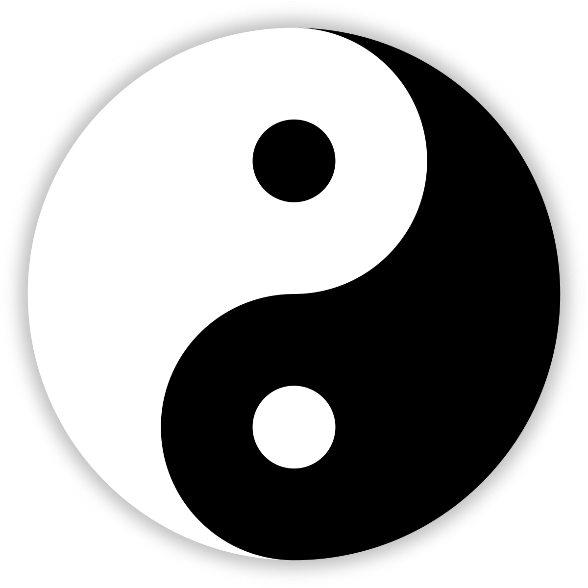
PERFORMANCE CHALLENGES
NHỮNG THÁCH THỨC VỀ HIỆU SUẤT
Video hình ảnh người tiền sử — bộ não của chúng ta vẫn mang cơ chế phản ứng từ thời nguyên thuỷ.
REPLACING THOUGHTS
THAY THẾ SUY NGHĨ
Slide không có chữ. Loạt ảnh cá nhân của diễn giả từ thời thơ ấu đến tuổi thiếu niên, kết thúc bằng ảnh mặc áo đấu thể thao.
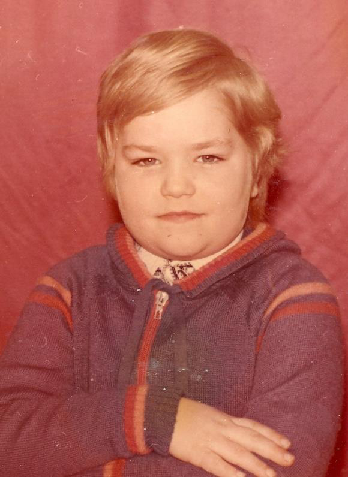
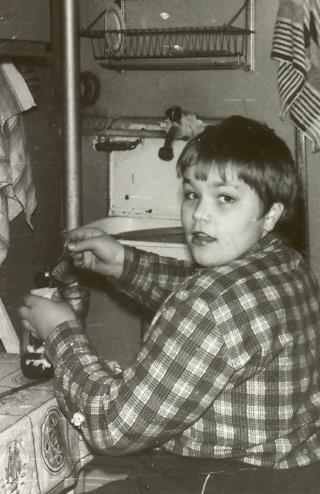
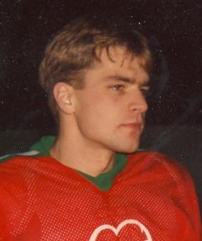
I CAN CHANGE
TÔI CÓ THỂ THAY ĐỔI
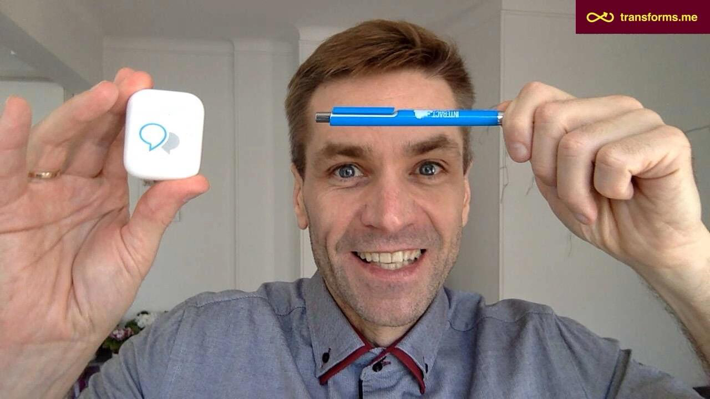
HYPER DAY
NGÀY VƯỢT TRỘI
1.01365 = 37.78
1,01365 = 37,78
Mỗi ngày kém đi 1% trong một năm còn lại 3%; mỗi ngày tốt hơn 1% trong một năm tăng gần 38 lần.
SOURCE: ONLINE
NGUỒN: TRỰC TUYẾN
RELENTLESS HONESTY
TRUNG THỰC KHÔNG KHOAN NHƯỢNG
Hình hai khối Rubik cùng đồng hồ bấm giờ hiển thị 03:36,61.
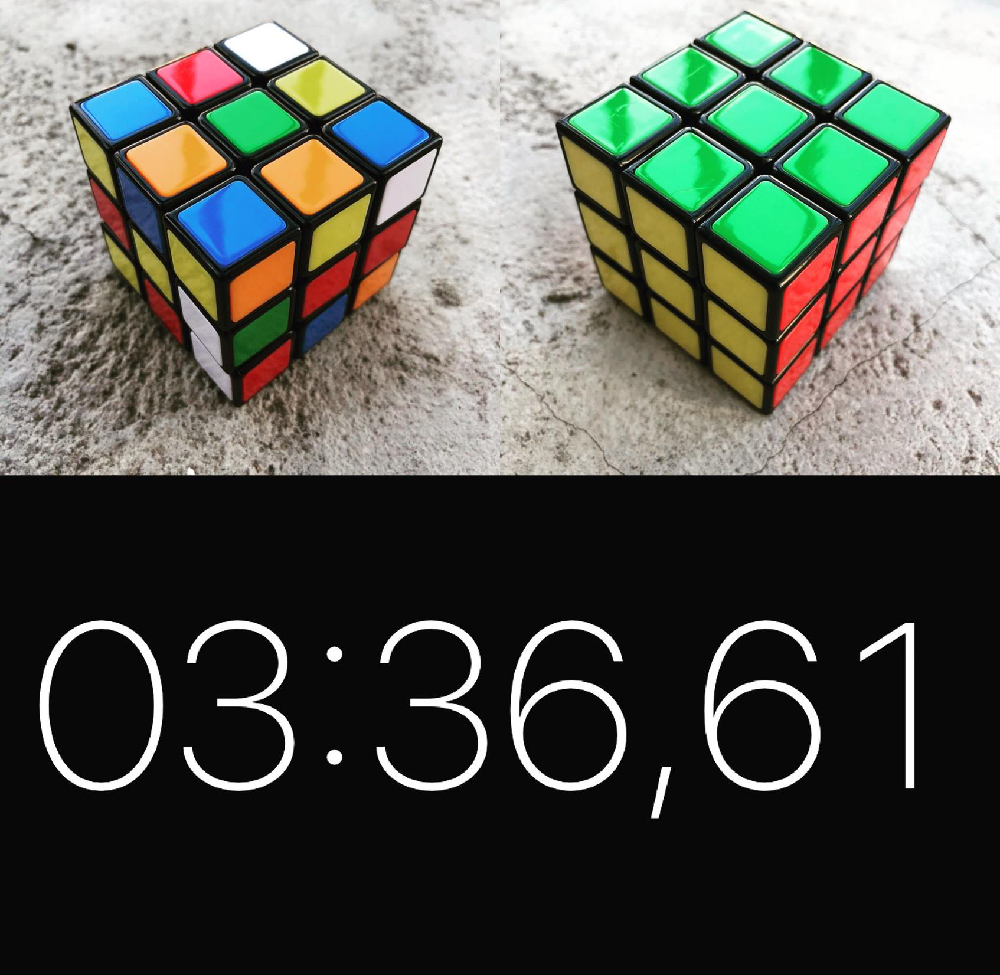
Video một kỳ thủ Rubik thi đấu tốc độ trên sân khấu.
HYPER PERFORMANCE
HIỆU SUẤT VƯỢT TRỘI
PERFORMANCE
HIỆU SUẤT
Biểu đồ trục hoành là thời gian, trục tung là hiệu suất.
HYPER PERFORMANCE
HIỆU SUẤT VƯỢT TRỘI
Cùng một biểu đồ, nay thêm hai nhánh: đi lên thành hiệu suất vượt trội hoặc đi xuống thành kiệt sức.
GUIDING ARROWS
NHỮNG MŨI TÊN DẪN ĐƯỜNG
AS ALWAYS
AS USUAL
OTHER TIME
HYPER PERFORMANCE
NHƯ MỌI KHI
NHƯ THƯỜNG LỆ
ĐỂ LÚC KHÁC
HIỆU SUẤT VƯỢT TRỘI
Bốn lối nghĩ quen thuộc kéo đường hiệu suất đi xuống; chỉ một hướng dẫn tới hiệu suất vượt trội.
Phụ đề trong hình: “So how do you like?”
Phụ đề trong hình: “Vậy bạn thấy thế nào?”
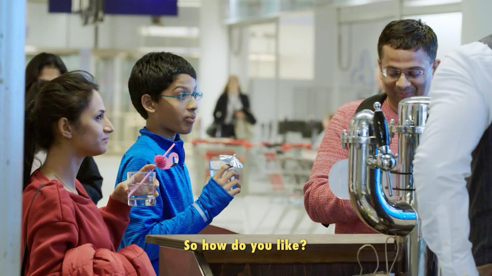
10 000 : 1
Biển báo trong hình: “PLEASE USE SIDEWALK”.
Nguồn dẫn trên slide: echristensen42.com/2016/10/07/creating-your-own-pathways-through-the-cloud/usesidewalks/
10 000 : 1
Biển báo trong hình: “VUI LÒNG ĐI TRÊN VỈA HÈ”.
Nguồn dẫn trên slide: echristensen42.com/2016/10/07/creating-your-own-pathways-through-the-cloud/usesidewalks/
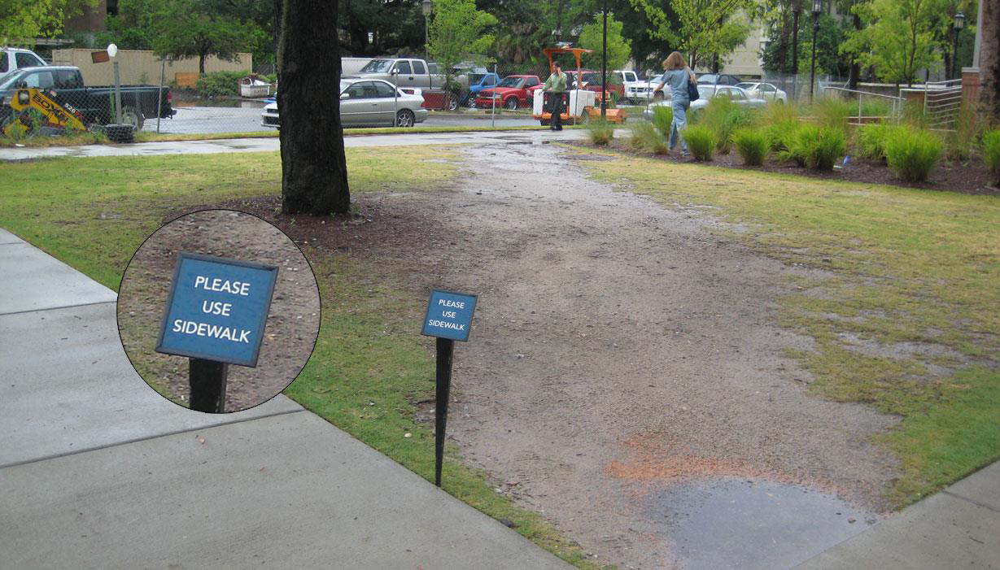
HUMAN BRAIN
BỘ NÃO CON NGƯỜI
Video một diễn giả đang giảng bài trước phông nền vàng.
Slide không có chữ ngoài hình: chân dung Daniel Kahneman và bìa sách Thinking, Fast and Slow (Tư duy nhanh và chậm).
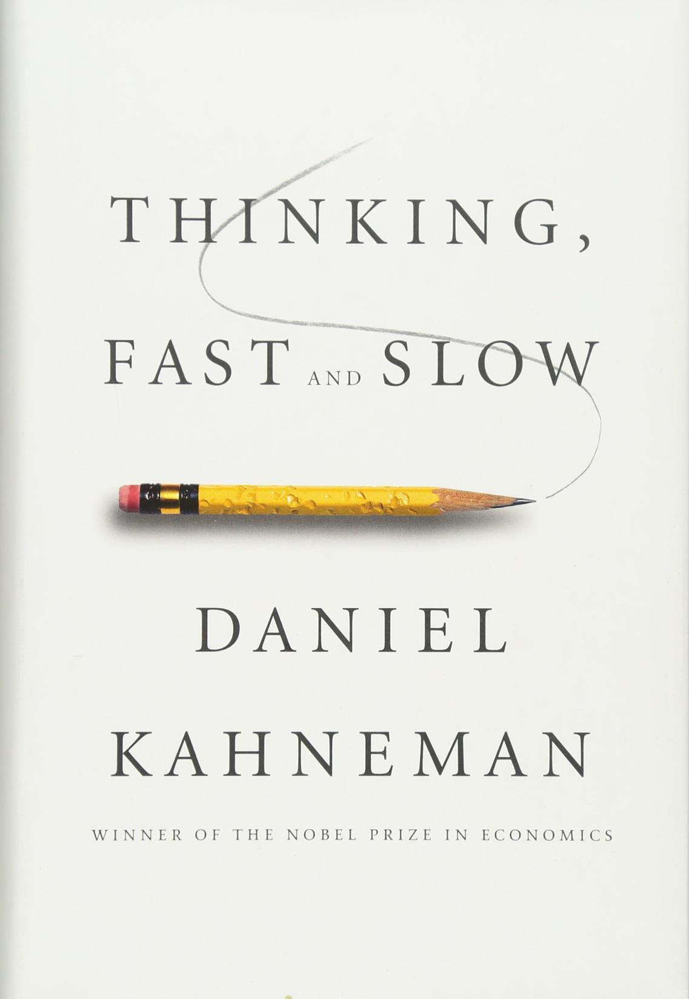
DECISIVE
INSTINCTIVE
RESISTIVE
SOURCE: ONLINE
QUYẾT ĐOÁN
BẢN NĂNG
KHÁNG CỰ
NGUỒN: TRỰC TUYẾN
Slide không có chữ. Ảnh chụp từ trong xe: một chiếc xe điện đang sạc tại trạm sạc nhanh.
BRAIN GYM
PHÒNG TẬP CHO NÃO
Hai slide không có chữ ngoài dòng “SOURCE: ONLINE” (NGUỒN: TRỰC TUYẾN) ở slide 43. Slide 42: ảo ảnh khối Rubik nổi trên mặt bàn. Slide 43: hai ảnh tháp nghiêng Pisa giống hệt nhau nhưng trông như nghiêng khác nhau.
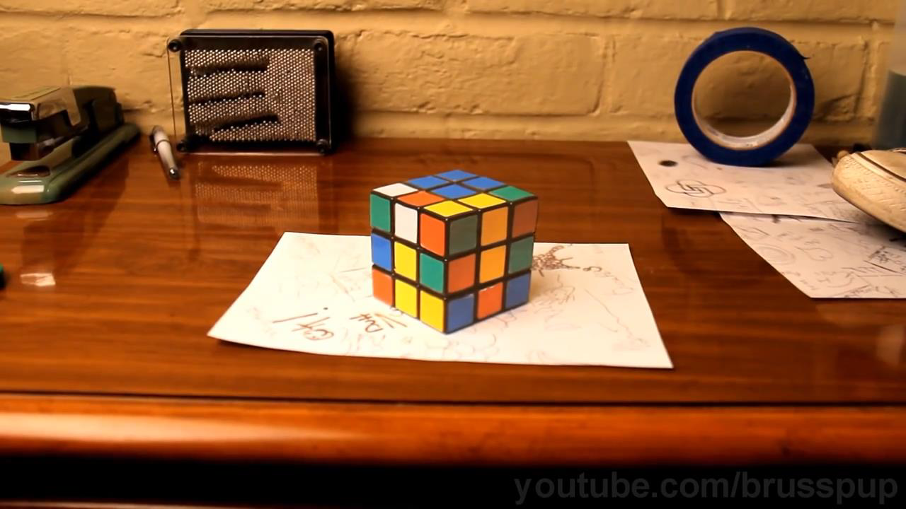
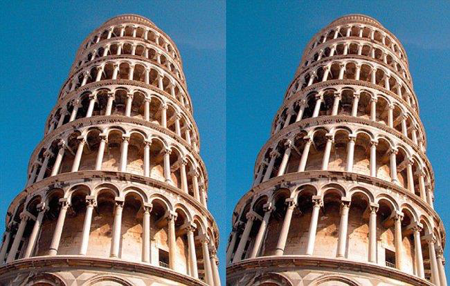
Slide không có chữ. Ảnh chụp màn hình bảng tin mạng xã hội với dãy “story” ở đầu trang.
Bốn slide liên tiếp không có chữ. Mỗi cặp ảnh gần như giống hệt nhau, chỉ khác một chi tiết nhỏ — bài tập quan sát về việc não bỏ sót thay đổi.
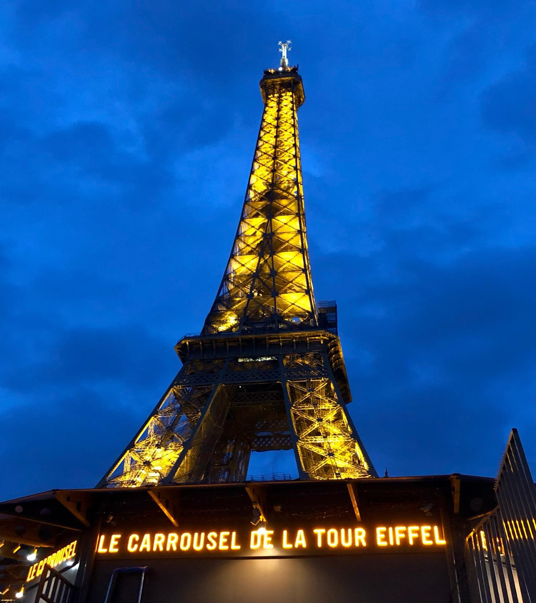
Hai slide không có chữ. Vạch sang đường được sơn theo kiểu 3D để người lái nhìn thấy như những khối nổi trên mặt đường, nhờ đó tự động giảm tốc độ.
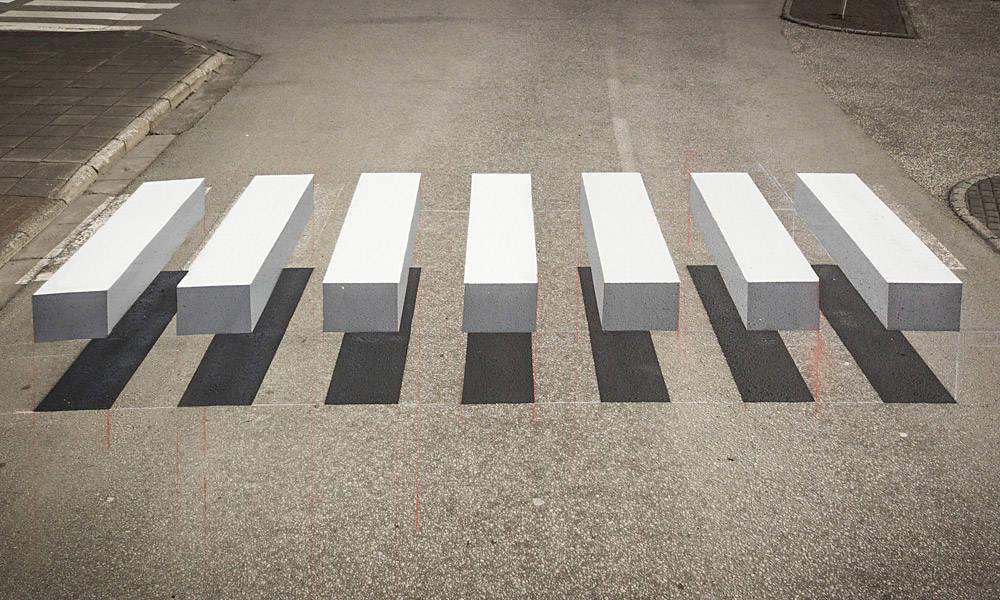
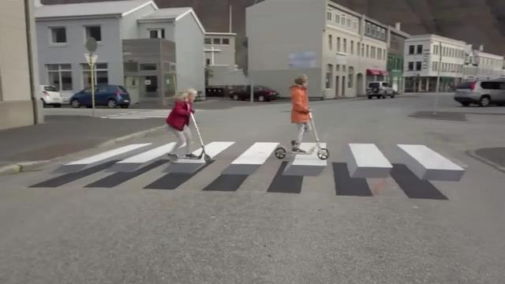
Ảo ảnh ô cờ và bóng đổ: hai ô A và B có cùng một sắc xám nhưng não ta nhìn thấy khác nhau.
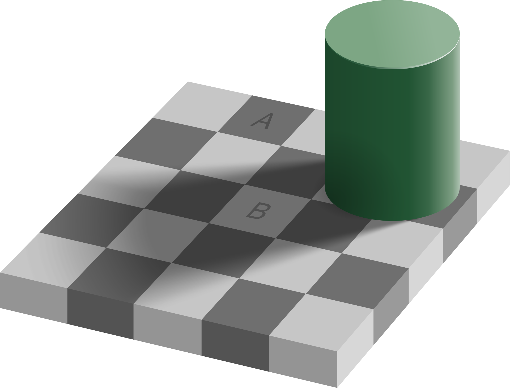
SOURCE: ONLINE
NGUỒN: TRỰC TUYẾN
Hình bộ não sáng lên — phần thưởng cho người vừa vượt qua loạt bài tập nhận thức.
Slide không có chữ. Hai khối xếp hình: một khối Rubik quen thuộc và một khối Megaminx phức tạp hơn.
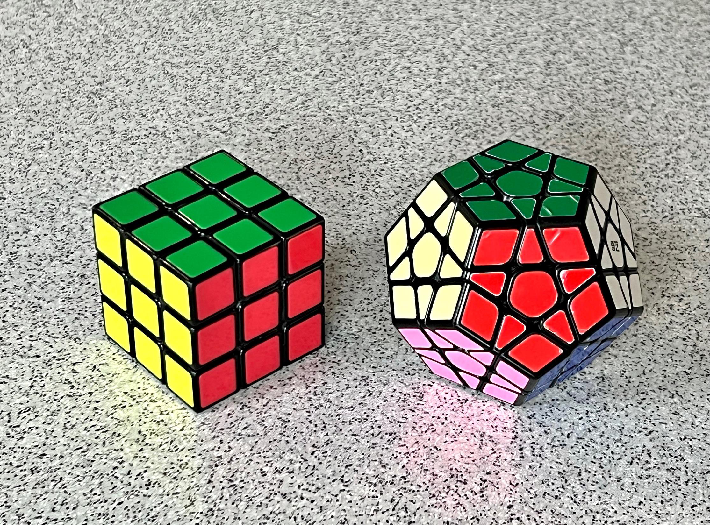
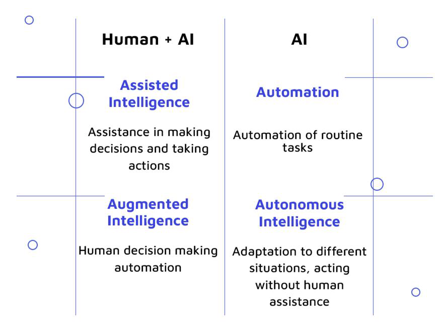
Video về nhận diện khuôn mặt trong cửa hàng.
EVOLVING INTELLIGENCE
TRÍ TUỆ TIẾN HOÁ
GESTURES · SPEAKING · DRAWINGS · WRITING · PRINTING · LIBRARIES · INTERNET · AI
CỬ CHỈ · LỜI NÓI · HÌNH VẼ · CHỮ VIẾT · IN ẤN · THƯ VIỆN · INTERNET · AI
Đường cong đi lên: mỗi bước tiến của công nghệ lưu trữ và truyền tải lại nâng mức trí tuệ chung của loài người.
Các mốc trên đường cong: cử chỉ · lời nói · hình vẽ · chữ viết · in ấn · thư viện · internet · AI.
Video một người dẫn chuyện do AI tạo sinh.
SOURCE: ONLINE
NGUỒN: TRỰC TUYẾN
Chân dung ba nhà sáng lập công nghệ, tiếp theo là ba dấu hỏi: ai sẽ là người kế tiếp.
HIGH ACCURACY DECISION MAKING
RA QUYẾT ĐỊNH VỚI ĐỘ CHÍNH XÁC CAO
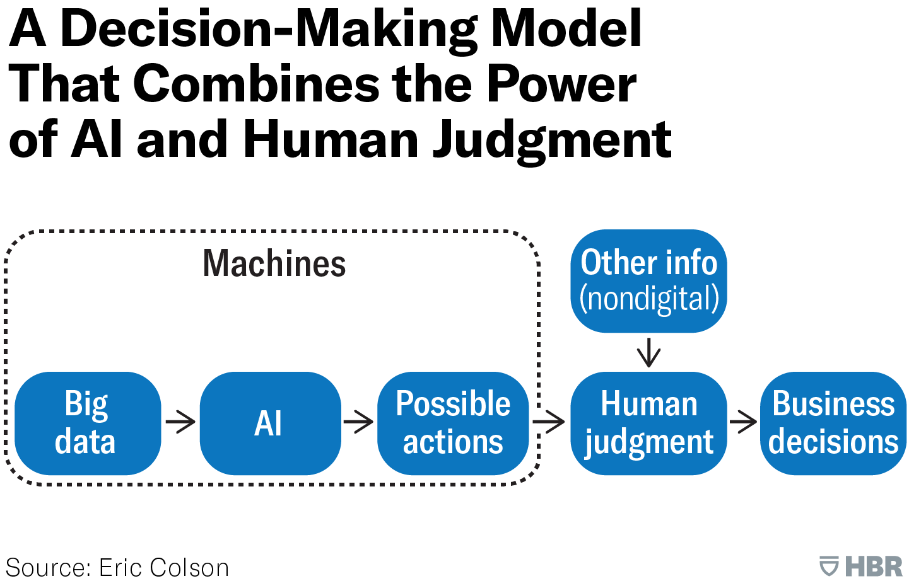
Video một cuộc đối thoại giữa con người và robot hình người.
SUSTAINABLE HYPER PERFORMANCE
HIỆU SUẤT VƯỢT TRỘI BỀN VỮNG
BEHAVIOR
HÀNH VI
Khoảng cách giữa điều ta biết và điều ta thực sự làm.
TRI THỨC
HÀNH VI
Slide không có chữ. Ảnh một đoạn cao tốc kẹt cứng xe.
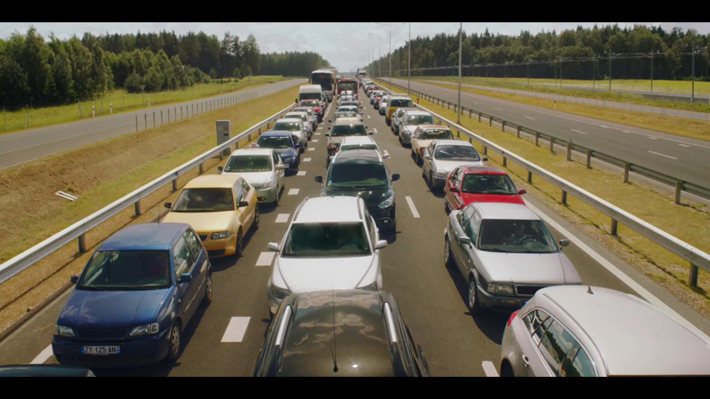
Bốn chặng được minh hoạ bằng một chiếc gậy lần lượt xoay đổi hướng trên các slide liên tiếp.
TRI THỨC
CHẤP NHẬN
Ý ĐỊNH
HÀNH VI
Slide chiếu trang đầu của bài báo khoa học; phần tóm tắt không đọc được ở độ phân giải này nên không dịch.
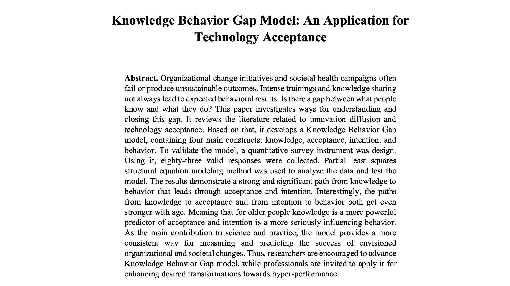
Slide không có chữ. Đoạn phim hai người đàn ông đứng giữa vùng đất khô cằn.
What Is the Eisenhower Matrix? A Complete Guide to Prioritization. Urgent & Important (Do First) · Not Urgent & Important (Schedule) · Urgent & Not Important (Delegate) · Not Urgent & Not Important (Eliminate).
Ma trận Eisenhower là gì? Hướng dẫn đầy đủ về sắp xếp ưu tiên. Khẩn cấp & Quan trọng (Làm trước) · Không khẩn cấp & Quan trọng (Xếp lịch) · Khẩn cấp & Không quan trọng (Giao việc) · Không khẩn cấp & Không quan trọng (Loại bỏ).
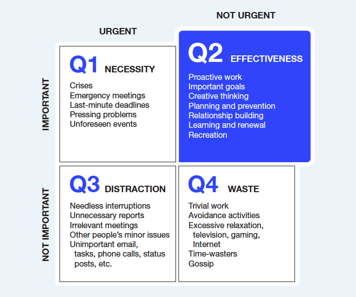
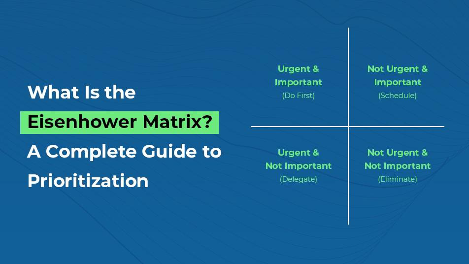
↓
↓
↓
↓
↓
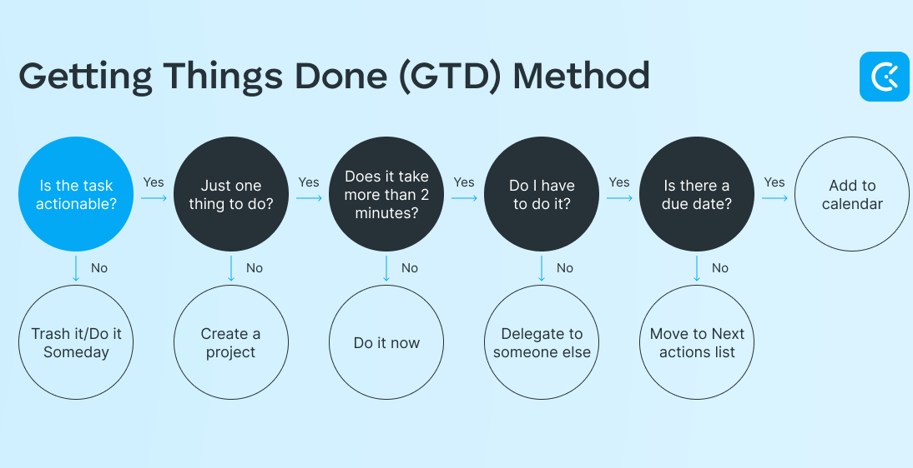
KEY TAKEAWAYS
NHỮNG ĐIỀU CẦN NHỚ
- Productivity is about impact, not activity. Focus limited attention and energy on work that creates the greatest value.
- Prioritization means deliberate trade-offs. Exceptional performance requires deciding what not to do, defer, delegate, or automate.
- Protect attention as a strategic resource. Reduce interruptions, task switching, and low-value information consumption.
- Manage cognitive load. Simplify decisions, externalise routine thinking, and create space for complex judgment and creativity.
- Use Human Artificial Intelligence (HAI). Combine distinctly human strengths — judgment, purpose, creativity, empathy, and accountability, with AI’s speed, analytical capacity, and scalability.
- Năng suất là tác động, không phải hoạt động. Hãy dồn sự chú ý và năng lượng có hạn vào công việc tạo ra giá trị lớn nhất.
- Ưu tiên nghĩa là đánh đổi có chủ đích. Hiệu suất xuất sắc đòi hỏi phải quyết định việc gì không làm, việc gì hoãn lại, giao đi hoặc tự động hoá.
- Bảo vệ sự chú ý như một nguồn lực chiến lược. Giảm gián đoạn, giảm chuyển đổi công việc và giảm tiêu thụ thông tin ít giá trị.
- Quản lý tải nhận thức. Đơn giản hoá quyết định, đưa những suy nghĩ thường nhật ra ngoài đầu, và tạo khoảng trống cho phán đoán phức tạp và sáng tạo.
- Vận dụng Trí tuệ Nhân tạo mang tính Người (HAI). Kết hợp những thế mạnh riêng có của con người — phán đoán, mục đích, sáng tạo, thấu cảm và tinh thần trách nhiệm — với tốc độ, năng lực phân tích và khả năng mở rộng của AI.
KEY TAKEAWAYS
NHỮNG ĐIỀU CẦN NHỚ
- Use AI to augment, not replace, judgment. Delegate appropriate cognitive work to AI while retaining human ownership of consequential decisions.
- Turn priorities into behaviors. Strategic intentions create results only when translated into specific, repeatable daily actions.
- Design the environment for execution. Good systems, routines, prompts, and defaults reduce dependence on motivation and willpower.
- Close the Knowledge Behavior Gap. Knowing what matters is insufficient; productivity comes from consistently doing what matters.
- Optimize for sustainable hyper-performance. The goal is not maximum short-term output, but sustained high-value performance without unnecessary cognitive overload or long-term harm.
- Dùng AI để tăng cường chứ không thay thế phán đoán. Giao cho AI phần việc trí óc phù hợp, nhưng con người vẫn giữ quyền quyết định với những việc hệ trọng.
- Biến ưu tiên thành hành vi. Ý định chiến lược chỉ tạo ra kết quả khi được chuyển thành những hành động cụ thể, lặp lại mỗi ngày.
- Thiết kế môi trường để thực thi. Hệ thống, thói quen, lời nhắc và thiết lập mặc định tốt sẽ giảm sự lệ thuộc vào động lực và ý chí.
- Khép lại Khoảng cách Tri thức – Hành vi. Biết điều gì quan trọng là chưa đủ; năng suất đến từ việc kiên trì làm điều quan trọng đó.
- Tối ưu cho hiệu suất vượt trội bền vững. Mục tiêu không phải là sản lượng tối đa trong ngắn hạn, mà là duy trì hiệu suất giá trị cao mà không gây quá tải nhận thức hay tổn hại lâu dài.
CORE MESSAGE
THÔNG ĐIỆP CỐT LÕI
- Do less of what consumes attention.
- Do more of what creates value.
- Use AI to expand capability while keeping human judgment in control.
- Làm ít hơn những việc ngốn sự chú ý.
- Làm nhiều hơn những việc tạo ra giá trị.
- Dùng AI để mở rộng năng lực, nhưng vẫn để phán đoán của con người nắm quyền kiểm soát.
Slide 76: đoạn phim tua nhanh dòng xe trong thành phố. Slide 77: hình âm dương quay lại, kèm ảnh chụp kênh YouTube của diễn giả — AgnisStibe.com, hyper-performance.
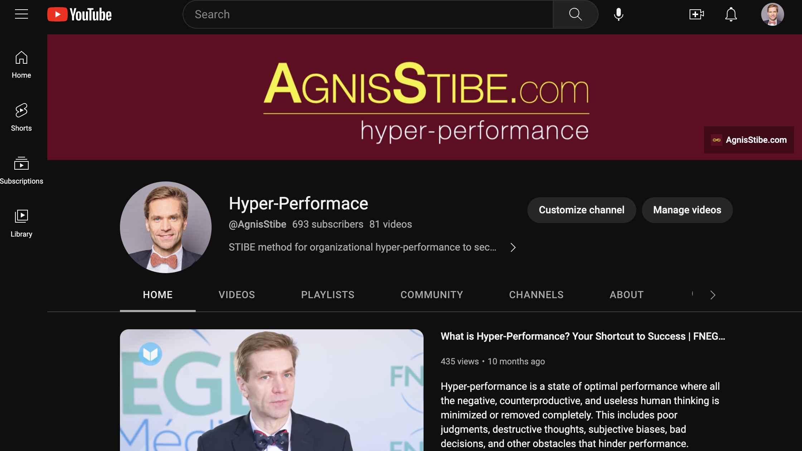
Assoc. Professor Agnis Stibe
RMIT University Vietnam, Saigon South Campus
Phó Giáo sư Agnis Stibe
Đại học RMIT Việt Nam, cơ sở Nam Sài Gòn